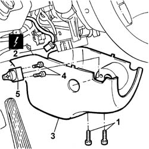
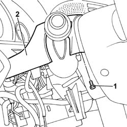

7040A26 Steering column TRIM - R.R.
- Path
- Procedures > 70 FITTINGS > 7040 BODY INTERIOR UPHOLSTERY AND TRIM > 7040A PASSENGER COMPARTMENT TRIMS > 7040A26 Steering column TRIM - R.R.
- Kind
- repair procedure (removal / refitting; the operation number is the code)
- Applies to
- all engines; all production periods
- Interactive page
- https://sloeber94.github.io/elrnDB-lThss/en/#/80385
Applies to: all engines; all production periods
 Removing
Removing
 Refitting
Refitting- Open the boot and disconnect the negative battery terminal.
1. Undo the fixing bolts for the lower part of the trim.
- Release the trim.
2. Disconnect the electrical connector.
 | Description | Connector |
|---|---|---|
2 | Steering wheel adjustment control unit | H093 |
3. Remove the lower part of the trim.
4. Undo the bolts fixing the steering wheel adjustment control unit to the steering column lower trim.
5. Remove the steering wheel adjustment control unit.

Applies to: all engines; all production periods
1. Undo the fixing bolts for the upper part of the trim.
- Release the trim.
2. Remove the upper part of the trim.

Applies to: all engines; all production periods
Refitting
Removing- Fit the upper part of the steering column shield tightening the fixing bolts.
- Fit the steering wheel adjustment control unit tightening the bolts fixing it to the lower steering column shield.
- Connect the electrical connector for the steering wheel adjustment control unit.
| Description | Connector |
|---|---|---|
. | Steering wheel adjustment control unit | H093 |
- Fit the lower part of the steering column shield tightening the fixing bolts.
- Connect the negative battery terminal.
Topics that link to this page (11)
- 5580AA Cruise Control ON/OFF control check
- 5580AB Cruise Control SET + control check
- 5580AC Cruise Control RECALL control check
- 5580AD Cruise Control SET- control check
- 3330B02 PEDAL ASSEMBLY - R.R.
- 3330B16 PEDAL assembly - dismantling and repairing at the bench
- 4110A30 Support with steering control shafts - R.R.
- 5550A10 stalk unit assembly - r+r
- 5560B11 ANALOGUE CONTROL PANEL - R.R. or Replace
- 7040A10 Instrument facia TRIM - R.R.
- 7040A23 Instrument panel SURROUND in dashboard